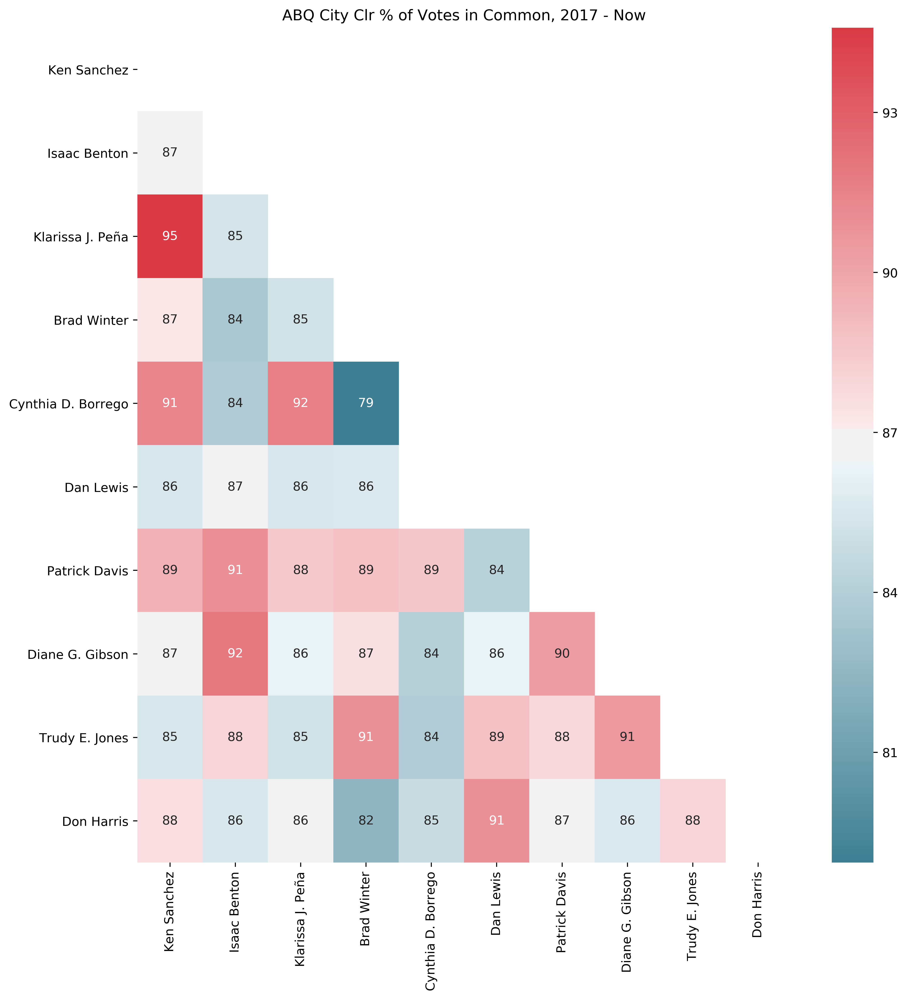

How Frequently Does Each Albuquerque City
Councilor Vote with the Others?
a code-fueled investigation by David Tenorio, frequently concerned Burqueño
Background
After a particularly disappointing vote that happened recently by the Albuquerque City Council, a thought came to my head:Do our city councilors pay attention to their constituents, or do they mainly just vote with each other?
To answer this question, I embarked on a journey and thought about the different parts I'd need to answer it. I needed data of some kind, but I ran into a roadblock: the ABQ Legislation's website makes it difficult to collect a lot of votes at once. That finding was discouraging: finding a specific vote would take a custom search and several clicks with no good workaround. That's when I turned to programming.The Hunt Begins
The first step was to find all the votes in a certain time range. I chose 2017-2019 for my time range, to see the effect of the most recent iteration of our city council. By including 2017 in this range, I could see if there was a change when Clr. Borrego, a Democrat, came into office in Nov. 2017 to replace Dan Lewis, a Republican, in the 2017 election. I then sought out to create the following data pipeline:- Execute a search for the desired time range on the City's website to collect a list of links
for each bill.
[bill_link1, bill_link2, bill_link3,...] - For each bill, there can be any number of votes taken by the council, due to the numerous
revisions bills go through before they're finally passed. As such, I wanted to collect all
of the links to each city council vote for each bill. While I'm there, scrape the
information for each vote.
[vote_link1, vote_link2, vote_link3,...]
vote_1: url, bill_name, bill_desc, date, result (Pass/Fail), clr1_action (For/Against/Excused), clr2_action, ... - With that list of links for each vote, scrape the page to find out how each councilor
voted. This would leave me with a lot of information: a ton of votes showing how each
councilor voted, all gathered using code!
[clr1, clr2, clr3,...]
clr1: clr_name, district, years_active, vote1 | action, vote2 | action, ... - Analyze the data to see how frequently each council member votes in common with each other
member to see if there were clear 'cliques' that formed between different councilors.
clr1 + clr2: X%
clr1 + clr3: Y%
... - Write up that journey and those findings for display here (subtly displaying my HTML/CSS prowess)!
Selenium Search
Firstly, I needed to compile a list of links for each bill over my desired time period. Thankfully, Python 3.X has the lovely Selenium framework which allowed me to use a web driver to execute a search on the city council web page without having to type in all the different parameters on my own. The code for this part involved finding the right CSS selector to allow the web driver to type and click in the right places. The search had multiple pages of results, so I also needed to go through each page to obtain a complete list. Once I had this search done, I could store a list of ABQ bill hyperlinks.From the Bills to the Votes
After getting the hyperlinks containing each bill, I then scraped each of those pages to find all the votes taken by the city council. A lot of different actions can be taken on a bill, and only some of them involve a city council vote. At this point, when I tried too many links my web driver began to time out. Tragically, TimeoutExceptions became my life. I tried to switch to BeautifulSoup4 to work around this issue, since these pages were static and didn't require interaction. For reasons I couldn't figure out, some of the responses from the HTTP requests made to the bill pages were massive: too big for BeautifulSoup to handle. So, I stuck with the web driver and broke the data down into chunks to combine later. I created a Vote object class to store interesting vote information (vote result, bill name, bill description, date, etc.). I ended up with a list of Vote objects, each one corresponding to a vote taken by the city council.Breaking it Down by Councilor
Once I had the links for each vote taken by the city council, I could scrape them for vote information: how did each councilor vote on each bill? I created a councilor object to hold information on each councilor, like their district, name, a dictionary of votes they've participated in along with their specific action on each vote. I realized that I was again dealing with static HTML, so I could reformat my code to use BeautifulSoup instead of a Selenium web driver for some gains in speed and a reduction in timeouts. The change worked this time, and my code could run to completion more often. This change dramatically improved my ability to evaluate a lot of links at once. I created a custom councilor object to store all the interesting vote information like their district, name, and a dictionary of the votes they participated in along with their particular action taken on each vote (For/Against/Excused).Cleaning up the CSVs
As mentioned, I needed a workaround for my inability to analyze all of these votes at once due to the web driver timing out. I decided to save each segment of the vote information to its own .csv file and write some more code to combine those .csv files into one master file. For 2017-2019, I ended up splitting the data into three chunks.Results
I had finally collected all the data I needed: every vote taken by the city council over a given time range, broken down by councilor! There would have been tens of thousands of clicks and pages loaded needed for someone to gather this information on their own. Talk about efficiency!I had a metric in mind: percentage of votes in common. That is, given all of the votes that any two councilors have taken together, for what percentage of those votes do said councilors vote in the same way? There were 1023 votes overall, but not every councilor votes each time (some votes are only done with a subcommittee).
I omitted unanimous votes from consideration, and also excluded cases where one councilor was marked as Excused; I wanted to know about the votes where councilors made a different decision from each other. I used pandas, seaborn, and matplotlib to produce the heat map below:

Findings
There were a number of findings I found interesting for the votes from this time period. From the heatmap, I made the following conclusions:- The average percent of votes in common across all of the councilors is 87.2%.
- The district 5 election did result in change: Clr. Borrego does have a different voting pattern than Clr. Lewis did.
- If we think of any two councilors that vote more than 90% in common as being "voting
partners", then there are a few such pairs (shown in descending order):
Clr1 District Clr2 District Peña 3 Sanchez 1 Peña 3 Borrego 5 Gibson 7 Benton 2 Borrego 5 Sanchez 1 Gibson 7 Jones 8 Jones 8 Winter 4 Davis 6 Benton 2 Harris 9 Lewis* 5 Gibson 7 Davis 6
- 97.6% of all of the votes taken passed.
- 46.6% of all the votes taken were unanimous.
"How can we as common residents of Albuquerque affect change at the local level?"
and"Are city councils usually this much in agreement?"
Albuquerque is not a city where every district has uniform needs, yet nearly half of every vote taken by the current council has been unanimous.All in all, this was a great project with some cool learnings for me:
- The total list of technologies used:
- Python 3.7, installed using Anaconda and developed with the Spyder IDE
- Selenium
- BeautifulSoup + requests
- csv
- Pandas
- Seaborn + Pyplot from Matplotlib
- HTML5 + CSS3 + Twitter Bootstrap 4 for this website
- Git + Github + Github Pages for version control and hosting
- The ability to use programming to improve civic engagement and literacy, answering questions like, "how does my city councilor vote?" Gathering this data and doing this analysis by hand would have been exhausting (on the order of 10,000 clicks and page loads, not to mention all of the manual entry), and the current structure of the data represents a real issue of accessibility.
Datasets, Files & Contact Info
The .csv datasets can be found here: There is an Excel version of the councilors file along with all of the code located in the Github repository. I'm a big believer in open-source so if you see improvements to be made, go for it! To use these files yourself, there are three different files to run (and almost certainly in this order):- info_grabber_and_writer.py does the web scraping and saves the files to .csv files
- csv_combiner.py combines multiple vote.csv files together, saving them to one larger .csv file
- similarity_calc.py does the similarity calculations from a vote.csv file and saves the heatmap
Think I could have done better? Find a mistake in the data or have an idea or some other cool piece of information I could show off? Feel free to contact me. There's a lot of neat info about our city! It's just a matter of finding it and making it useful.
Saludos,
David Tenorio
David Tenorio